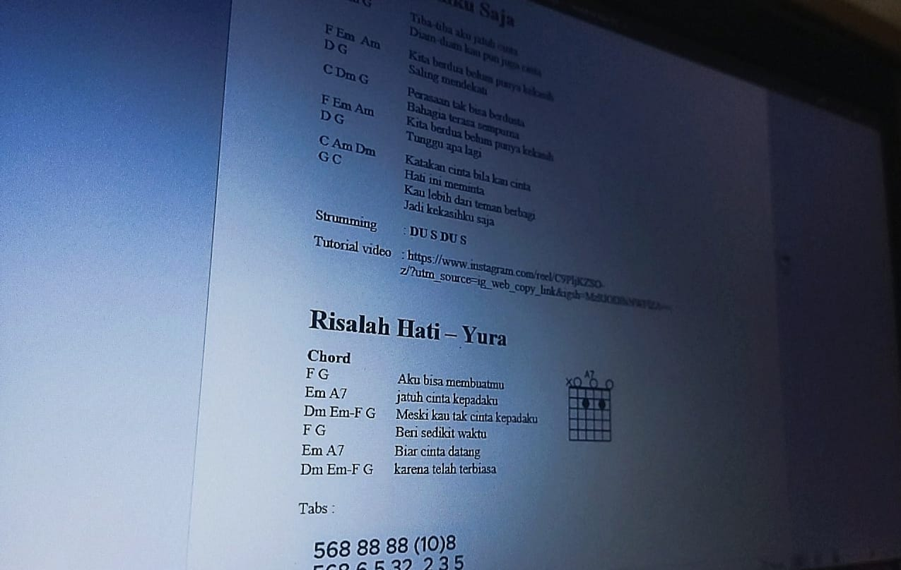

Tentang Saya
Halo! Saya lulusan SMK ROSMA Karawang. Musik adalah gairah saya, terutama dalam memetik senar gitar. Saat ini, saya sedang menantang diri untuk menguasai dunia baru: coding, personal branding, teknisi wifi, serta optimasi Microsoft Office (Excel & Word).

